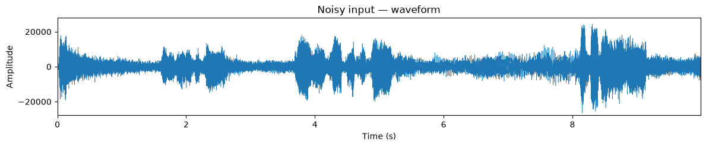
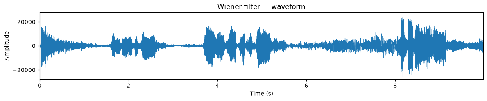
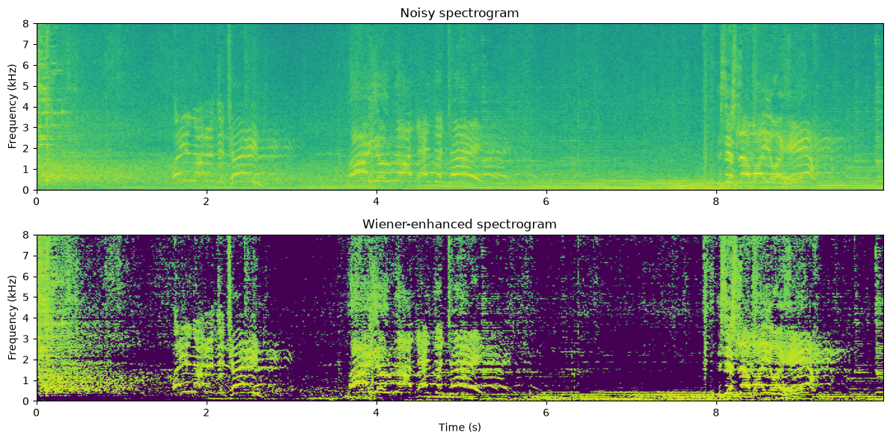
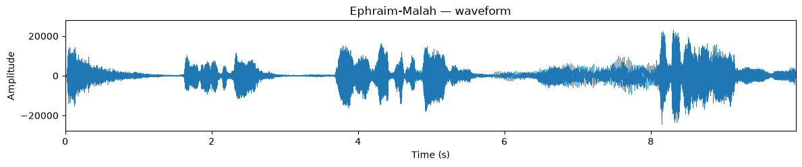
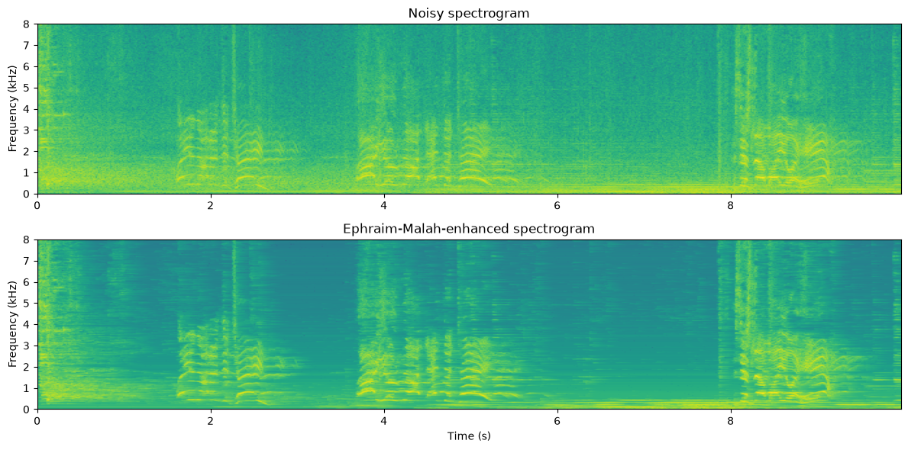
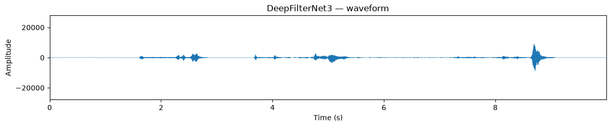
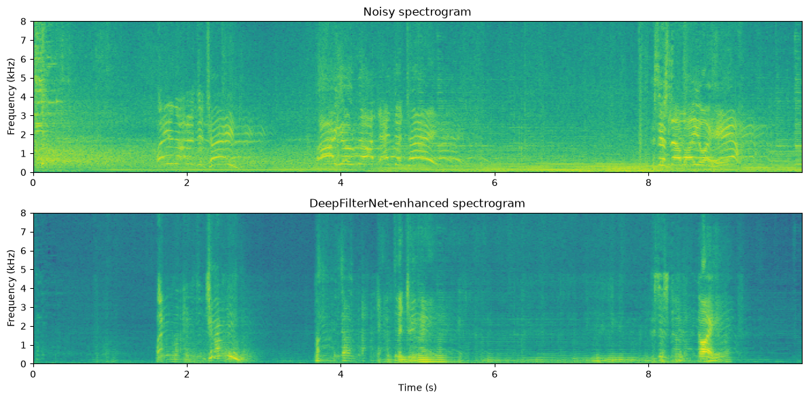

Four speech enhancement methods on the same noisy recording — listen and compare. Source & code: cozec/noise_attenuation, following the Aalto Speech Processing Book.
Speech recorded in the real world arrives mixed with background noise. Noise attenuation tries to recover the clean speech from a single noisy recording: slice the signal into short overlapping frames (STFT), estimate how much of each time-frequency bin is noise, multiply each bin by a suppression gain, and resynthesize. The methods differ in how the gain is computed.
Speech in noise, 10 s at 44.1 kHz.

Subtract the average noise power from each frame's power spectrum. The zero-threshold on negative differences causes the classic "musical noise" warble. Gentlest suppression of the four.
The MMSE-optimal linear gain — same subtraction without the square root, so it suppresses more aggressively at the same SNR. Still memoryless, so musical noise remains.


The statistically optimal short-time amplitude estimator (1984). Its temporal smoothing (α = 0.98) makes the gain evolve smoothly across frames — the strongest classical suppression, with the musical noise largely gone.


A real-time deep-learning enhancer (Rikorose/DeepFilterNet). Predicts perceptual-band gains plus a complex multi-frame filter for the low frequencies, removing noise even underneath the speech. Run here with the authors' pretrained checkpoint.


Residual power in the noise-only frames of the test signal (lower = more noise removed):
| Method | Noise-frame power | Character |
|---|---|---|
| Noisy input | 64.1 dB | — |
| Spectral subtraction | 60.2 dB | gentlest, most musical noise |
| Wiener | 58.7 dB | stronger suppression, still musical noise |
| Ephraim–Malah | 55.9 dB | strongest classical, smooth residual |
| DeepFilterNet3 | 39.6 dB | neural, far cleaner residual |
The classical methods form a clear progression, but all share the same limit: a stationary noise model and a real per-bin gain cannot remove noise that overlaps speech in time and frequency. The pretrained neural model — having learned speech structure from data — reduces noise by ~24 dB, over 16 dB beyond the best classical method.